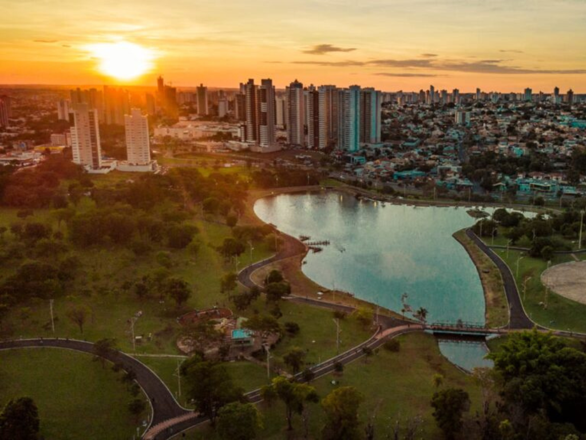

O estado de Mato Grosso, localizado na Região Centro-Oeste do Brasil, é um dos maiores do país em extensão territorial e se destaca pela sua grande riqueza natural e importância econômica. Abrigando biomas como a Amazônia, o Cerrado e o Pantanal, o estado possui uma biodiversidade impressionante e paisagens únicas. Sua economia é fortemente baseada no agronegócio, sendo um dos maiores produtores de soja, milho e carne bovina do Brasil. A capital, Cuiabá, é um importante centro regional e porta de entrada para o ecoturismo, atraindo visitantes interessados em explorar a natureza exuberante e a cultura local marcada por tradições e influências indígenas.
